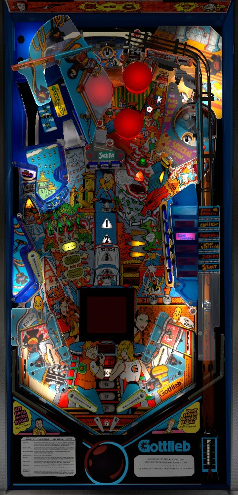

Making the top saucer starts a reaction time game that gives a mystery award. Shots to the right spinner award playing cards, and making a hand of 5 gives either a mystery award or Select a Feature, which lets you choose which mystery award you want. Countdown and Instant Multiball are the best. Multiball can also be started once per ball by completing the TOWN targets on the left, then shooting the spinner. During any multiball, shots to the loop (via the upper left flipper, usually) score 1,000,000 per revolution.
The below picture of Lights...Camera...Action!'s playfield was taken from the VPX recreation by Kristian.

Lights...Camera...Action! does not have a skill shot. All plunges go to the top center of the table, where they can potentially land in the top saucer for a Gunfight. See below.
Any shot to the top saucer starts a Gunfight. You will be told ready...set...draw. When you hear and see the word Draw, press either flipper button as fast possible to win the Gunfight. This gives a Mystery award.
When the spinner is lit for Spin, each spin of the spinner rotates the selected playing card between Ace, King, Queen, Jack, or 10. If the ball lands in the upper right saucer behind the spinner, the selected playing card is added to the grid on the backglass. When 5 cards are collected on the grid, the grid is reset and an award is given based on the 5-card poker hand you assembled. Completing a hand of One Pair or Two Pair gives a Mystery on default settings, and gives Select-a-Feature on any settings: 3 of a Kind or better always gives Select-a-Feature. You also get an extra ball for making a Full House or Straight, a Special for making 4 of a Kind, or 5 Specials for making 5 of a Kind. At the beginning of the game, 2 cards are spotted for you toward your first set of 5. The number of completed poker hands is kept track of over the whole game and contributes to the end of ball bonus. This feature only concerns card ranks, not suits, so the concept of a Flush or Straight Flush is absent.
For a Mystery award, the game picks an award at random and gives it to you. For Select-a-Feature, an award is shown, and you can either press the left flipper to accept that award or the right flipper to reject it and roll a new one. You can reject as many awards as you want for 5 seconds, at which time you are forced to take the displayed award. With only one exception that I am aware of, the pool of posisble awards is identical between Mystery and Select-a-Feature, and includes the list below:
Winning a Gunfight or landing in the upper right saucer at any time rotates the left ramp structure, alternating it between feeding the Gunfight saucer or feeding the upper left flipper.
The loop can be accessed via a ricochet, but is more consistenly reached as a shot from the upper left flipper. To feed the ball to the upper left flipper at controlled speed, shoot the left ramp when it is in a position to divert downwards, or shoot the red target in the dead-end lane on the left anytime. When the Loop is completely unlit, its value is 10,000 points. This means you receive 10,000 for each revolution the ball makes around the loop before settling in the popper inside and being launched out. After making one or more Loop revolutions at a value of 10,000 points, the Loop will award 100,000 per revolution for about 15 seconds. If you collect at least one spin at this value, it will increase again to 1,000,000 per loop, and if you collect at least one 1,000,000, it will increase one last time to give a Special per revolution, for a potential at 3-5+ free games. The Loop Special remains lit until at is not collected for about 15 seconds.
Also, if the left ramp is currently diverting down toward the upper left flipper, making this shot will light the target near the Loop entrance for 100,000 points for about 15 seconds or about 1 hit.
There are 2 ways to start multiball:
If you start multiball from a Mystery award at the Gunfight saucer, it will always be 2 balls. If you start multiball from the upper right saucer (via lock, Mystery, or Select-a-Feature), multiball will be a 2-ball round by default, but can be upgraded to be 3 balls if you are able to plunge ball #2 into the Gunfight saucer without it hitting any other switch. During multiball: completing the center 3-bank of drop targets scores 50,000, completing the right 6-bank of drop targets scores 250,000, and all revolutions at the Loop score 1,000,000. If you collect at least one 1,000,000 from the Loop, the Loop value will upgrade to 1,000,000 points plus a Special for every revolution for the remainder of multiball.
When multiball ends, the Loop value will be set to 1,000,000 for about 15 seconds, and it behaves identically as the regular single-ball progression. Only during multiball will the Loop gives 1,000,000 points and a Special per revolution; in single ball play, it's always one or the other.
The jackpot starts at 500,000 points whenever the machine is first turned on or immediately after the jackpot is won. Knocking down any center drop target adds 10,000 to the jackpot and hitting any pop bumper adds 5,000 to the jackpot (or 5,000 and 3,000 respectively in a 5-ball game), up to a maximum of 9,999,000 points. To collect the Jackpot, you must:
If you earn Begin Jackpot Scene from a Mystery or Select-a-Feature award, you jump straight to step 3 with the timer.
There are two ways to start a Stunt Scene:
In a Stunt Scene, you have 16 long seconds (about 30 real seconds) to hit the targets indicated by 5 yellow arrows around the game: the N in TOWN, the 100,000 target near the Loop, and the three standup targets behind the 6-bank of drops on the right. Hit these targets to light them solidly; light all 5 within the time to earn the shown award.
In addition to being able to be used once per ball in play to light a lock for multiball, each completion of the TOWN targets on the left advances the bonus multiplier in the sequence 2x-3x-5x-10x. If the bonus multiplier is maxed out at 10x, completions of TOWN award 100,000 points.
If you start all 5 scenes over the course of a game- winning a Gunfight, starting a Multiball, completing a poker hand, starting Jackpot Scene, and starting Stunt Scene- the spinner lane will be lit for a free Select-a-Feature, as a sort of proto-wizard award for seeing basically everything in the game.
Any completion of the right 6-bank of drop targets awards a letter in Blockbuster, which scores a Special when completed.
Lights...Camera...Action! has a conventional in/out lane setup, with the in lanes slanted toward the middle of the table slightly instead of being purely vertical. In lanes score 5,000 points. Out lanes score 20,000 points. Making the left in lane, the Loop, or the upper right saucer behind the spinner lights a kickback in the left out lane for 20 seconds; while lit, the kickback can be used repeatedly, but the out lane scores only 5,000 points instead of 20,000.
There are two parts of the end of ball bonus: base bonus and hand bonus. Both are affected by bonus multipliers, which are only earned from completing the TOWN targets on the left. Base bonus is increased by 5,000 per drop target (or 3,000 in a 5-ball game) up to a maximum of at least 916,000 (likely 999,000). Hand bonus is equal to 30,000 points per completed poker hand in the game so far; the inserts near the drain only count up to 3 of these, but at least 5 can be scored. Bonus is extremely meaningful at 5x or 10x multiplier, but not too valuable otherwise.